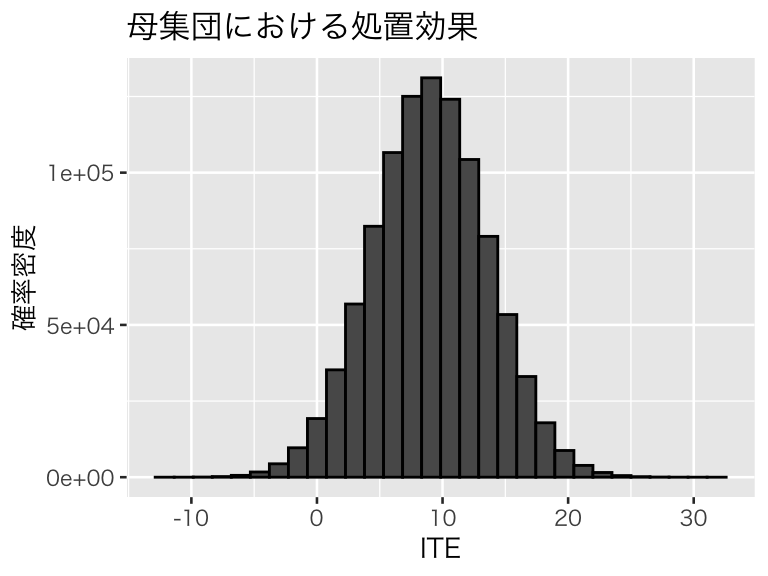
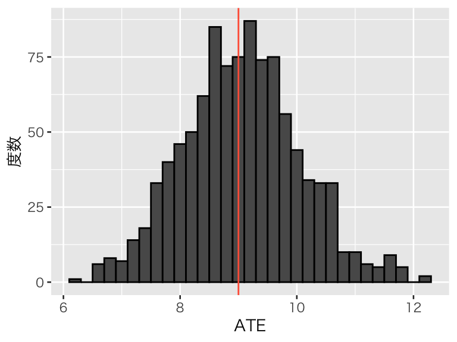
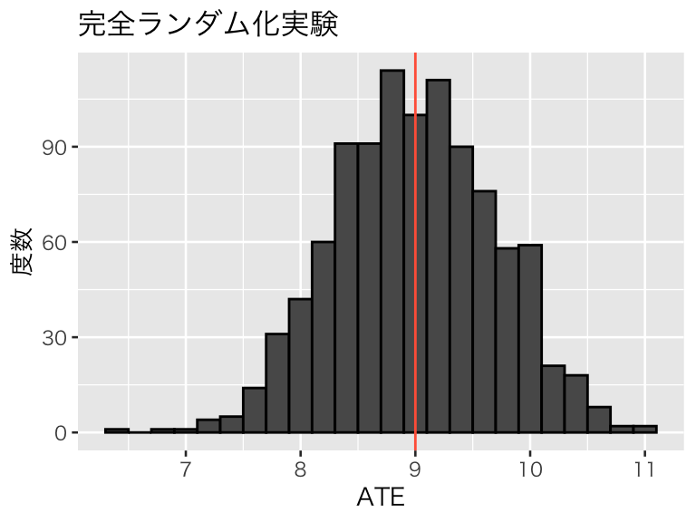
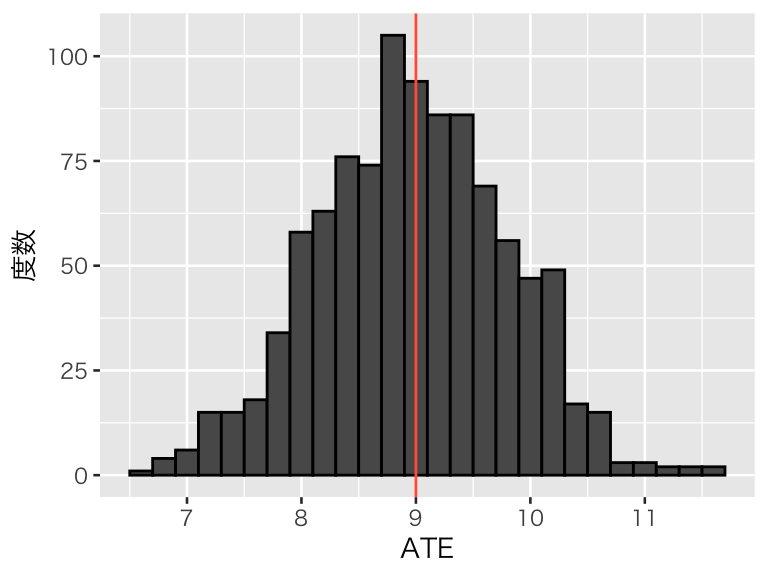
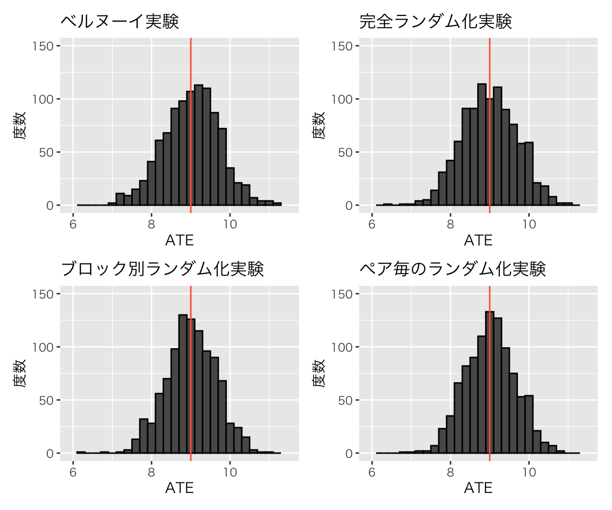

Topic 3 RCT（ランダム化比較試験）
- トピック3の講義スライド (PDF, 1.4MB)
3.1 準備
3.1.1 予習、講義動画、実習課題
このトピックでやるべきことは、以下のとおりである。
- シラバス(PDFファイル) に記載されているトピック3の予習課題を読む。
- KUTLMS (Moodle) にあるトピック3の講義動画を視聴する。
- この資料の続きを読み、Rを使った実習を行うことでRCTの理解を深める。
- まず、書いてあるコードをそのまま実行する。
- 自分で数字（シミュレーションの条件）を変えて、結果がどう変わるか研究する（課題）。
- （おまけ：希望者のみ）Josh Angrist による以下の解説動画（英語）を視聴する。
- 教科書 (安井 2020) 第1章のRを使った分析を自分でやってみる（課題）。
3.1.2 Rパッケージの読み込み
必要なパッケージを読み込み、作図用の日本語フォントを設定する。
pacman::p_load(tidyverse, patchwork)
theme_set(theme_gray(base_size = 10, base_family = "HiraginoSans-W3")) # macOS用
#theme_set(theme_gray(base_size = 10, base_family = "Meiryo")) # Windows用
#theme_set(theme_gray(base_size = 10, base_family = "IPAGothic")) # Ubuntu用
#showtext::showtext_auto() # Cloud用
#theme_set(theme_gray(base_size = 10, base_family = "noto")) # Cloud用3.1.3 このトピックで使うRコードの説明
このトピックでは新しい関数は使わない。 理解できないコードがあれば、遠慮なくSlack で質問を。
3.2 ランダム化のシミュレーション
3.2.1 母集団の設定
ある処置 \(D\) の平均処置効果が正であると仮定して、母集団のデータを作る。 共変量として二値の性別と、年齢（20歳から65歳）を考える。
set.seed(2020-06-09)
N <- 1e6
y_1_m <- rnorm(N, mean = 10, sd = 4)
y_1_f <- rnorm(N, mean = 12, sd = 4)
y_0_m <- rnorm(N, mean = 0, sd = 2)
y_0_f <- rnorm(N, mean = 4, sd = 2)
age <- sample(20:65, size = N, replace = TRUE)
df_pop <- tibble(id = 1:N,
age = age) %>%
mutate(male = rbinom(n(), size = 1, prob = 0.5),
y_1 = ifelse(male, y_1_m, y_1_f) + 0.05 * (age - mean(age)),
y_0 = ifelse(male, y_0_m, y_0_f) + 0.05 * (age - mean(age)),
ITE = y_1 - y_0)作成した母集団の特徴を確認する。
## id age male y_1
## Min. : 1 Min. :20.00 Min. :0.0000 Min. :-9.407
## 1st Qu.: 250001 1st Qu.:31.00 1st Qu.:0.0000 1st Qu.: 8.176
## Median : 500000 Median :42.00 Median :1.0000 Median :10.999
## Mean : 500000 Mean :42.48 Mean :0.5003 Mean :10.999
## 3rd Qu.: 750000 3rd Qu.:54.00 3rd Qu.:1.0000 3rd Qu.:13.823
## Max. :1000000 Max. :65.00 Max. :1.0000 Max. :31.507
## y_0 ITE
## Min. :-10.5585 Min. :-12.437
## 1st Qu.: -0.1295 1st Qu.: 5.901
## Median : 1.9970 Median : 9.008
## Mean : 1.9990 Mean : 9.000
## 3rd Qu.: 4.1286 3rd Qu.: 12.092
## Max. : 13.3120 Max. : 31.514ITE（個体の処置効果）の分布を確認しておこう。
pop_ite <- ggplot(df_pop, aes(x = ITE), after_stat(density)) +
geom_histogram(color = "black") +
labs(y = "確率密度", title = "母集団における処置効果")
plot(pop_ite)
平均処置効果を計算しておこう。
## [1] 8.999995## [1] 9.993789## [1] 8.005113以下では、この母集団に対して異なる方法でRCTを実施した場合にどのような結果が得られるか、シミュレーションで確かめよう。
3.2.2 ベルヌーイ実験
ベルヌーイ実験 (Bernoulli experiments) をRで実行しよう。まず、シミュレーションを繰り返し行うために、実験を実行する関数を作る。標本サイズ（1回の実験における被験者数） を sample_size で、各ベルヌーイ試行で処置に割付ける確率を prob で指定できるようにする。
bern_experiment <- function(population, sample_size = 100,
prob = 0.5, info = FALSE) {
df <- slice_sample(.data = population, n = sample_size)
df <- df %>%
mutate(D = rbinom(n(), size = 1, prob = prob))
ATE <- with(df, mean(y_1[D == 1]) - mean(y_0[D == 0]))
if (info) cat('処置群の個体数:', sum(df$D), '; 統制群の個体数:', sample_size - sum(df$D), '\n')
return(ATE)
}この関数を使ってベルヌーイ実験を1度実行してみる。sample_size = 100、prob = 0.5 とする（既定値なので指定しなくて良い）。
## 処置群の個体数: 57 ; 統制群の個体数: 43## [1] 8.538327もう1回やってみる。
## 処置群の個体数: 48 ; 統制群の個体数: 52## [1] 9.082204もう1回やってみる。
## 処置群の個体数: 47 ; 統制群の個体数: 53## [1] 8.429646当然ながら、実験結果は毎回変わる。
実験を1000回繰り返し、結果を図示してみよう。母集団における本当の平均因果効果を赤い縦線で示す。 標本サイズは100である。
bern_100 <- replicate(1000, bern_experiment(df_pop))
hist_bern_100 <- tibble(ATE = bern_100) %>%
ggplot(aes(x = ATE)) +
geom_histogram(binwidth = 0.2, color = "black") +
geom_vline(xintercept = pop_ATE, color = "tomato") +
labs(y = "度数", title = "ベルヌーイ実験")
plot(hist_bern_100)
1つひとつの実験は必ずしも ATE を正確に推定しているわけではないが、平均すれば正しい効果を推定できていることがわかる。「正しい」ATEが9 であるのに対し、RCT による推定の平均値は 9 である。
処置に割付ける確率は、0.5 でなくても良い。
## 処置群の個体数: 78 ; 統制群の個体数: 22## [1] 9.000707## 処置群の個体数: 18 ; 統制群の個体数: 82## [1] 7.948835## 処置群の個体数: 10 ; 統制群の個体数: 90## [1] 7.335998bern_p80 <- replicate(1000, bern_experiment(df_pop, prob = 0.8))
hist_bern_p80 <- tibble(ATE = bern_p80) %>%
ggplot(aes(x = ATE)) +
geom_histogram(binwidth = 0.2, color = "black") +
geom_vline(xintercept = pop_ATE, color = "tomato") +
labs(y = "度数")
plot(hist_bern_p80)標本サイズ（被験者の数）を変えるとどうなるだろうか。 標本サイズが30の場合：
bern_30 <- replicate(1000, bern_experiment(df_pop, sample_size = 30))
hist_bern_30 <- tibble(ATE = bern_30) %>%
ggplot(aes(x = ATE)) +
geom_histogram(binwidth = 0.2, color = "black") +
geom_vline(xintercept = pop_ATE, color = "tomato") +
labs(y = "度数")
plot(hist_bern_30)標本サイズが50の場合：
bern_50 <- replicate(1000, bern_experiment(df_pop, sample_size = 50))
hist_bern_50 <- tibble(ATE = bern_50) %>%
ggplot(aes(x = ATE)) +
geom_histogram(binwidth = 0.2, color = "black") +
geom_vline(xintercept = pop_ATE, color = "tomato") +
labs(y = "度数")
plot(hist_bern_50)
標本サイズが500の場合：
bern_500 <- replicate(1000, bern_experiment(df_pop, sample_size = 500))
hist_bern_500 <- tibble(ATE = bern_500) %>%
ggplot(aes(x = ATE)) +
geom_histogram(binwidth = 0.2, color = "black") +
geom_vline(xintercept = pop_ATE, color = "tomato") +
labs(y = "度数")
plot(hist_bern_500)標本サイズが小さくても、平均的には正しい因果効果を推定できている。 しかし、標本サイズが小さいと、推定のばらつき（標準誤差）が大きくなる。
## [1] 1.303407## [1] 1.004959## [1] 0.7140102## [1] 0.330548標準誤差が大きいと、過小推定や過大推定が多くなることがわかる。実験を1回（2回、3回）しか行わないなら、標本サイズを十分な大きさにしないと、過小推定や過大推定をしてしまうかもしれない。
3.2.3 完全ランダム化実験
次に、完全ランダム化実験 (completely random experiments) を行う。
sample_size と、処置に割付ける個体の数 n_treated を選べるようにする。ただし、sample_size > n_treated である。
cr_experiment <- function(population, sample_size = 100,
n_treated = ceiling(sample_size / 2), info = FALSE) {
if (sample_size <= n_treated | n_treated <= 0)
stop('n_treated must be a positive integer smaller than sample_size.')
df <- slice_sample(.data = population, n = sample_size) %>%
mutate(D = sample(rep(c(1, 0), c(n_treated, sample_size - n_treated)),
size = sample_size, replace = FALSE))
ATE <- with(df, mean(y_1[D == 1]) - mean(y_0[D == 0]))
if (info) cat('処置群の個体数:', n_treated, '; 統制群の個体数:', sample_size - n_treated, '\n')
return(ATE)
}sample_size = 100、n_treatd = 50 （どちらも既定値）にして、1回実験を行ってみよう。
## 処置群の個体数: 50 ; 統制群の個体数: 50## [1] 8.584128もう1度やってみる。
## 処置群の個体数: 50 ; 統制群の個体数: 50## [1] 9.89403この実験を1000回繰り返し、結果を可視化しよう。
cr_100 <- replicate(1000, cr_experiment(df_pop))
hist_cr_100 <- tibble(ATE = cr_100) %>%
ggplot(aes(x = ATE)) +
geom_histogram(binwidth = 0.2, color = "black") +
geom_vline(xintercept = pop_ATE, color = "tomato") +
labs(y = "度数", title = "完全ランダム化実験")
plot(hist_cr_100)
やはり、平均的にはうまく推定できているようだ。ATEの推定値の平均値は、9 である。
完全ランダム化実験で処置に割付ける数は、標本サイズの半分でなくても良い。
## 処置群の個体数: 70 ; 統制群の個体数: 30## [1] 7.992297## 処置群の個体数: 25 ; 統制群の個体数: 75## [1] 9.782785この実験を1000回繰り返し、結果を可視化しよう。
cr_prop20 <- replicate(1000, cr_experiment(df_pop, sample_size = 100, n_treated = 20))
hist_cr_prop20 <- tibble(ATE = cr_prop20) %>%
ggplot(aes(x = ATE)) +
geom_histogram(binwidth = 0.2, color = "black") +
geom_vline(xintercept = pop_ATE, color = "tomato") +
labs(y = "度数")
plot(hist_cr_prop20)標本サイズ（被験者数）の20％のみを処置に割付けても、平均的には正しいATEを推定できる。
3.2.4 ブロック別ランダム化実験
続いて、ブロック別ランダム化実験 (stratified randomized experiments) を実施してみよう。
ここでは、性別（男性ダミー変数）によってブロックを作る。
処置に割付ける数は、各群における処置の割合で指定できるようにする。
例えば、男性ブロックでは7割を処置、女性ブロックでは4割を処置するなら、prop = c(0.7, 0.4) と指定できるようにする。
strat_experiment <- function(population, sample_size = 100,
prop = c(0.5, 0.5), info = FALSE) {
if (min(prop) <= 0 | max(prop) >= 1) stop("prop must be in (0, 1).")
df <- slice_sample(.data = population, n = sample_size)
Male <- df %>% filter(male == 1)
Female <- df %>% filter(male == 0)
n_treated <- ceiling(c(nrow(Male), nrow(Female)) * prop)
ATE_male <- cr_experiment(Male, sample_size = nrow(Male),
n_treated = n_treated[1])
ATE_female <- cr_experiment(Female, sample_size = nrow(Female),
n_treated = n_treated[2])
male_prop <- mean(df$male)
ATE <- male_prop * ATE_male + (1 - male_prop) * ATE_female
if (info) {
cat('男性ブロック 処置群の個体数', n_treated[1], '; 統制群の個体数:', nrow(Male) - n_treated[1], '\n')
cat('女性ブロック 処置群の個体数', n_treated[2], '; 統制群の個体数:', nrow(Female) - n_treated[2], '\n')
}
return(ATE)
}sample_size = 100、prop = c(0.5, 0.5) （どちらも既定値）として、1回実験してみる。
## 男性ブロック 処置群の個体数 28 ; 統制群の個体数: 27
## 女性ブロック 処置群の個体数 23 ; 統制群の個体数: 22## [1] 8.558515もう1度やってみる
## 男性ブロック 処置群の個体数 26 ; 統制群の個体数: 26
## 女性ブロック 処置群の個体数 24 ; 統制群の個体数: 24## [1] 8.715336この実験を1000回繰り返し、結果を可視化しよう。
strat_100 <- replicate(1000, strat_experiment(df_pop))
hist_strat_100 <- tibble(ATE = strat_100) %>%
ggplot(aes(x = ATE)) +
geom_histogram(binwidth = 0.2, color = "black") +
geom_vline(xintercept = pop_ATE, color = "tomato") +
labs(y = "度数", title = "ブロック別ランダム化実験")
plot(hist_strat_100)やはり、平均的にはうまく推定できているようだ。ATEの推定値の平均値は、9.01 である。
処置する個体の数（割合）は、ブロックごとに変えても良い。
## 男性ブロック 処置群の個体数 17 ; 統制群の個体数: 38
## 女性ブロック 処置群の個体数 7 ; 統制群の個体数: 38## [1] 9.260837## 男性ブロック 処置群の個体数 42 ; 統制群の個体数: 10
## 女性ブロック 処置群の個体数 5 ; 統制群の個体数: 43## [1] 9.7690451000回繰り返してみよう。
strat_b <- replicate(1000, strat_experiment(df_pop, prop = c(0.8, 0.2)))
hist_strat_b <- tibble(ATE = strat_b) %>%
ggplot(aes(x = ATE)) +
geom_histogram(binwidth = 0.2, color = "black") +
geom_vline(xintercept = pop_ATE, color = "tomato") +
labs(y = "度数")
plot(hist_strat_b)
ブロックごとに処置に割り付ける割合が違っても、平均的には正しい推定ができる。
3.2.5 ペア毎のランダム化実験
4番目の方法として、ペア毎のランダム化試験 (paired randomized experiments) を実施しよう。 サンプルの中で、性別が同じで、年齢が近い者同士をペアにして、ペア毎に一方を処置に、他方を統制に割付ける。 ペアを組む都合上、標本サイズは偶数に制限し、サンプル内の男女の数がそれぞれ偶数になるように調整する。
paired_experiment <- function(population, sample_size = 100) {
## sample_size が奇数の場合はエラー
if (sample_size %% 2 != 0) stop("sample_size must be an even number.")
n_male <- sample_size / 2
if (n_male %% 2 != 0) n_male <- n_male + sample(c(-1, 1), size = 1)
n_female <- sample_size - n_male
Male <- population %>%
filter(male == 1) %>%
slice_sample(n = n_male) %>%
arrange(age) %>%
mutate(D = as.vector(replicate(n() / 2, sample(0:1, size = 2))))
Female <- population %>%
filter(male == 0) %>%
slice_sample(n = n_female) %>%
arrange(age) %>%
mutate(D = as.vector(replicate(n() / 2, sample(0:1, size = 2))))
df <- bind_rows(Male, Female)
ATE <- with(df, mean(y_1[D == 1]) - mean(y_0[D == 0]))
return(ATE)
}標本サイズ sample_size = 100 （既定値）で1回実験してみる。
## [1] 8.230426もう1回やってみよう。
## [1] 8.688203この実験を1000回繰り返し、結果を可視化しよう（そこそこ時間がかかるので注意）。
pair_100 <- replicate(1000, paired_experiment(df_pop))
hist_pair_100 <- tibble(ATE = pair_100) %>%
ggplot(aes(x = ATE)) +
geom_histogram(binwidth = 0.2, color = "black") +
geom_vline(xintercept = pop_ATE, color = "tomato") +
labs(y = "度数", title = "ペア毎のランダム化実験")
plot(hist_pair_100)やはり、平均的にはうまく推定できているようだ。ATEの推定値の平均値は、9.02 である。
各ペアで処置に割り付ける確率は、0.5 でなくても良い。自分で確かめてみよう。
3.2.6 4つのRCT を比較する
最後に、それぞれのRCTの推定精度を比較しよう。どれも標本サイズは100で、処置の確率・割合・数が全体の半分（程度）になるようにしたものを比べる。
1000回の実験をシミュレートしたヒストグラムを再掲する。
MIN <- min(c(bern_100, cr_100, strat_100, pair_100)) - 0.2
MAX <- max(c(bern_100, cr_100, strat_100, pair_100)) + 0.2
((hist_bern_100 + xlim(MIN, MAX) + ylim(0, 150)) +
(hist_cr_100 + xlim(MIN, MAX) + ylim(0, 150))) /
((hist_strat_100 + xlim(MIN, MAX) + ylim(0, 150)) +
(hist_pair_100 + xlim(MIN, MAX) + ylim(0, 150)))
標準誤差を比較する。
## [1] 0.7140102## [1] 0.6964512## [1] 0.6364027## [1] 0.6304716このように、処置のパタンの数が最も少ない（かつブロック[ペア]がより同質的な）ペア毎のランダム化実験の標準誤差が最も小さく、推定精度が高いことがわかる。
経済実験におけるランダム化について、さらに詳細な説明は List, Sadoff, and Wagner (2011) を参照。また、RCT全般については、実験経済学（岡野先生）と実験デザイン（小谷先生）の授業で詳しく扱うはずなので、それらの授業まだ受講していない人はぜひ受講してほしい。
3.3 トピック3の課題
- 上で行ったシミュレーションを、条件を変えて試し、どのような場合に実験がうまくいき、どのような条件だと失敗しやすいか研究しなさい。また、面白い結果や納得できない結果が出たら、Slack でシェアし、受講生同士で議論しなさい。
- 教科書 (安井 2020) 第1章の1.4節 (pp.24-33) の分析を自分で実行しなさい。
今回の課題はいずれも提出不要だが、必ず自分で実行すること。
参考文献
List, John A., Sally Sadoff, and Mathis Wagner. 2011. “So You Want to Run an Experiment, Now What? Some Simple Rules of Thumb for Optimal Experimental Design.” Experimental Economics 14: 439. https://doi.org/10.1007/s10683-011-9275-7.
安井翔太. 2020. 効果検証入門：正しい比較のための因果推論/計量経済学の基礎. 技術評論社.